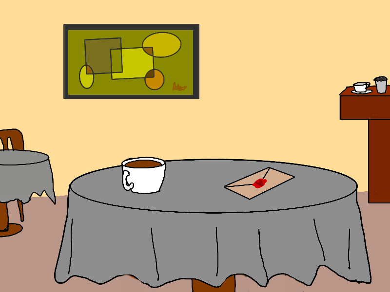

And So it Begins
I had stepped out of the cafe to take an urgent client call, and the letter was waiting for me at my table next to my coffee when I returned to my table. An expensive-looking peach-colored envelope sealed with red wax.
“Did you see who left this on my table?” I asked the barista. He shrugged no.
I sighed. Probably one of those tediously theatrical marketing stunts for some sort of stupid luxury product launch. Then I noticed the impression in the wax. It was the head of a yak.

Inside the envelope was a short note, handwritten on expensive note paper.
“A car service will pick you up at 8:00 PM tonight. — UAK”
I frowned. UAK? I knew of only one person with those initials.
There seemed to be something else in the envelope. I shook it out.
It was a single yak coin (see The Shadow’s Journey). I peered at it, and pulled out my own from my wallet to compare. They looked the same, give or take some wear. It seemed genuine.
The car service picked me up promptly at 8. Half an hour later, I was standing in front of a modest Class III mansion (an ISO Class III mansion is one where the front door is at the end of a curving driveway that runs between 50-100 meters from the main street-facing gate, with the building at least 80% obscured by trees).
A butler was waiting for me at the foot of the front stairs.
“If you’ll follow me sir…”
He lead me up the stairs, through the front door, through the anteroom, past a large, empty dining room, and into a discreet skullduggery room.
For those of you who have fewer dealings with the ultra-wealthy than I do, a skullduggery room is standard in Class III mansions and above, and usually contains a few armchairs, a small bar, and in the case of Class II and Class I mansions, a secure comm-line and secret tunnel to the basement lair.
“May I offer you a drink sir?” asked the butler.
“Thanks, I’ll just help myself,” I said. Skullduggery rooms, as some of you may know, usually operate on informal self-service principles.
The butler bowed and retreated.
This particular skullduggery room already had two people in it, my old friends Guanxi “6%” Gao, and Arnie Anscombe, nursing drinks.
“Hey guys,” I said, “so you’re here too. Any idea what this is about? A juicy new gig I hope.”
“No idea,” said Gao. Anscombe shrugged no as well.
“How you doing Rao? The 2x2s are flourishing I hope?” asked Gao.
I walked over to the bar, surveyed the options, and poured myself some expensive-looking bourbon.
“The drawing and quartering is proceeding well, thanks. How’s the 6% business?”
A tired look came over Gao’s face, and he stared down into his drink for a moment. I settled into the armchair next to him.
“6% of zero is zero. The damn coronavirus has wrecked my 2020 plans. All the gigs I had lined up have evaporated. I was actually in Wuhan in December, wrapping up one of last year’s gigs. Got out just in time, a couple of weeks before all hell broke loose. Now I have a couple of months to figure something out before my savings run out.”
“Damn, sorry about that. What about you Arnie? How’s the data-munging business?”
“Booming actually. A dozen leads asking about deep learning contingency planning models in the last week alone. I guess I’m on the positive externalities side of the virus. Sorry Gao, don’t mean to be insensitive. I’ll look out for a piece of action for you.”
Gao shrugged, and began to say something, but before he could, we were interrupted by a tall, gaunt figure striding into the room.
Ulysses Alexander Khan, UAK, was in the house.
“Khan! Long time no see! I don’t think we’ve met since that AspireKat business[1] in 2013! Seven years!”
“How are you Rao? Anscombe. Gao. Thanks for coming, all of you.”
Gao looked concerned. He said, “You’re looking pretty run down Khan. Lots more gray in the hair I see, and have you lost weight? McKinsey riding you too hard?”
Khan headed over to the bar and poured himself some scotch, then settled into the last armchair before responding.
“As it happens, I’m no longer with McKinsey. I left about six months ago.”
“I’m not surprised, it’s not a place for enterprising people,” I said (see, The McKinsey Affair).
Gao raised his glass, “Well, welcome to the indie world, Khan.”
Anscombe peered appraisingly at Khan in his usual unsettling way. I always feel like a spreadsheet when the kid does that to me.
“Doesn’t look like you need to work anymore, Khan,” he said, and gestured vaguely at our surroundings. “Nice Class III mansion you have here.”
Khan shook his head.
“Not mine; I’m just borrowing it. You’re right though. I don’t need to work. In fact, I was going to retire. I have a modest little Class V starter mansion by the ocean in Greece. I was going to spend the next few years quietly working on a history of consulting in the Byzantine and Ottoman empires. Long-time interest of mine.”
“So why didn’t you?” I asked. “I’m guessing it has to do with why we’re here?”
Khan stood up.
“Gentlemen, I have been retained by a group of high-net-worth individuals, including the owner of this mansion, for a long-term engagement that will last at least a decade, perhaps several.”
“To do what?” asked Gao.
“I’ll get to that. But as one piece of it, I have been asked to staff up a global network of experienced independent consultants. Ones who are past the basic challenges of making enough money and meaning for their own needs, and are looking for more. That’s where you come in. I’m hoping to get the three of you to seed one local corner of it.”
“Well, I’m in. For the right percentage of course,” said Gao at once, grinning.
“There is no percentage. If you’re in it for the percentage, you’re not ready for this. What I’m offering is not what you’d call a regular paid gig.”
Arnie raised an eyebrow. “I hope you’re not telling us a bunch of millionaires and billionaires is expecting us to work pro-bono for the questionable pleasure of their occasional company?”
Khan drained his scotch, made an expansive gesture with his arms, and walked back to the bar for a refill.
“Gentlemen, gentlemen. You’re thinking too small. That’s always the problem with you indies. Thinking ‘power before money’ doesn’t come naturally to you. Still, your skepticism is warranted. I too, in my time, have had dealings with the Scrooge class of wealth. But as a gesture of good faith…”
Khan reached under the bar and pulled out a small wooden box, and opened it. Inside, two rows of yak coins gleamed. There must have been at least a hundred in there. He extracted three, put the box away, and returned to his armchair with the coins and his drink.
“You each already received one of these with your invitations, but…”
He slid a coin towards each of us.
“I know you have a few of these already, Gao. And you have a couple I think Rao? And you, young Anscombe, I believe had none before today? Well you have two now. They’re of course, either worthless or priceless. That’s up to you.”
He leaned back.
“Those are yours just for hearing me out. No expectations. You’re free to walk out that door after you’ve heard what I have to say. Keep the coins, pass them on, or throw them in the trash.”
The three of us looked at each other briefly.
I stood up, “let me get another drink.”
“My clients… sponsors is perhaps a better word… my sponsors — our sponsors if you choose to accept my offer — are, as I have said, a global group of high net-worth individuals. They are collectively worth several hundreds of billion dollars, and refer to themselves as The Club.”
“Very imaginative,” I said.
“Like the Davos crowd? Bohemian Grove?” asked Arnie.
Khan shook his head.
“No, this is not your usual partying, pearl-clutching, rule-the-world LARPing crowd. That crowd is mostly running for the hills these days. Some of them are already bugging out, in full-on bunker mode. Unbelievably banal bunch. No vision or imagination. No, this is a serious group. Dent in the universe types. Bug-in types, not bug-out types.”
“And what does this serious group want to do? Save the world? Freeze themselves until the luxury Mars base is ready for them?”
Khan smiled and leaned back.
“Why not both?” he said.
“And why does The Club want to sponsor a network of independent consultants?”
“Not just any old network, gentlemen. The Club wants me to resurrect the Order of the Yak.”
Khan paused dramatically, then scanned our faces with a speculative look on his face.
“Though maybe this time around we can find a way to get a few women into the Order too. It’s always been a sausage fest as far as I can tell from the history. One battle at a time though, we must start from where we are after all…So…what do you think?”
“Is this a joke?” asked Arnie incredulously. “The Order of the Yak… that’s just a bunch of pre-modern hokum… sorry guys, I know you in particular like to nerd out about that stuff Rao, but seriously. This is 2020. We’re not in a world of wizards, viziers, and assassins guilds anymore. And our clients aren’t monarchs and nobles.”
Khan looked at him and nodded.
“Perhaps, though I wouldn’t be so sure about monarchs and nobles. But we are in a world of viruses disrupting supply chains. A world possibly on the verge of climate collapse. A world of what Rao here likes to call the Great Weirding, where old certainties are crumbling, and with them, the institutions built on trust in those certainties. And that’s what the Order of the Yak has historically been about, as you’d know if you’d studied the history. Every dark age, every troubled transition between eras, every uncertain, chaotic patch of history anywhere in the world, you see the Order of the Yak quietly step up its activity, steering the affairs of the world a little more firmly than usual, shepherding it through its bottleneck crises. Or yakherding it rather.”
“Nice speech, Khan,” interrupted Gao, “but Arnie is right. Theatrical wax-sealed envelopes, antique coins, a ridiculous medieval secret society of consultants that’s been dead for centuries. What do they have to do with…” he trailed off uncertainly and looked at me.
“…with a bunch of billionaires trying to save the world in 2020?” I finished for him.
“Myth and ceremony gentlemen, myth and ceremony!” shouted Khan, getting up.
The three of us looked at him quizzically.
“Perhaps you should finish your speech,” said Gao, in a resigned tone.
“Thank you,” said Khan, and paused. He seemed to be gathering his thoughts.
“We consultants, gentlemen, do you know what we are? I mean beyond being everyday advisors, counselors, and mercenary instruments to those immersed in the fog of war, and the stream of action? What role do we play in the human drama? Why do we exist?”
He looked around at us.
“Myth and ceremony, gentlemen. We create meaning out of the fog of action, that’s what we do. Mythmaking Bardic Artistry. That’s the real MBA! We consider what is in the light of what could be, and in the process of creating forms and structures around the action, we see, we value, we witness. And through those acts of valuing and witnessing, we create the meaning in the stories that our clients enact. The history of the world, I tell you gentlemen, does not actually exist until we witness it into existence. Until people like us turn mere events into significations, history is just one damn thing after another.”
Khan paused for breath. He was getting worked up. The old fire I had first witnessed seven years ago was back, and coursing through him.
“We are stewards of the adjacent possible. Think about that. We are the guardians, champions, and evangelists of the great what-ifs of humanity. And there are times in the story of humanity when that adjacent possible, it gets just a little thicker, just a little fuller of possibilities that must be navigated, possibilities both gloomy and cheerful. Times that call for a greater shared consciousness among us constant witnesses and occasional nudgers of history. Times that call for, yes, the Order of the Yak. And at such times, we the consultants of the world, we who make it our business to consider the human condition in the context of all the scenarios that could be, at all levels from startups to nations, we have a choice before us.”
Khan glared at us, his eyes aflame with the fire of the Old Religion.
“We can either help each other help the world uncover better futures, or we can let it continue its blinkered, unreconstructed descent into hell, concerned only with our damn hourly rates. We consultants, beyond our everyday work of helping clients navigate this or that specific challenge, you know what we do? We turn zemblanity into serendipity for the entire world! Unsurprisingly unlucky into surprisingly lucky. That’s our real calling.”
He paused for breath and a swig of the scotch.
“And that’s what the Club is giving us a chance to do. Not with money, not with specific gigs, though those may well flow your way as well. No, what they are offering is a chance to grasp history a little more firmly by the scruff of its neck, and nudge it in a different direction, towards greater luck. The Order of the Yak is not just a historical curiosity my friends. It is an idea about how we humans ought to live our lives. The unexamined civilization, gentlemen, is not worth perpetuating, and it is we consultants, we who step aside from the tumult of action long enough to examine it on behalf of the rest, in order to make it worth perpetuating. And we examine it neither from the spotlit center, nor from the shadowy margins, but from the interstices. Gentlemen, we are neither part of the distracting pageantry, nor a part of the gawking, uncomprehending crowds. No, we are the ones who ensure that the show goes on, for both the actors and the audience, by weaving in and out of its liminal spaces, nudging here, pinching there. That’s who we are, that’s what we do, and that’s why, the Order of the Yak must rise again, because you see gentlemen…!”
He paused triumphantly, drained his tumbler, and glared at us.
“…because you see gentlemen, unlike birds, civilizations are unnatural things with no instincts. They must be taught to fly. That’s what consultants are for. And that’s why the Order of the Yak must rise again.”
We sat in silence for a moment, as Khan poured himself another drink and caught his breath.
Gao spoke first.
“So what exactly is it that you and the Club want us to do exactly? Prance around in Tibetan robes sending each other wax-sealed letters about the coronavirus? Not that I mind skulking in skullduggery rooms with quality alcohol.”
“I’m glad you asked,” said Khan, and reached under the bar again, this time pulling out three plain manilla envelopes, which he passed around to us.
“What’s this?” I asked.
Khan smiled, “Just some fodder for the first meeting of the first chapter of the resurrected Order of the Yak, should you choose to form it. What you choose to do with it is entirely up to you.”
- that AspireKat business — index.html